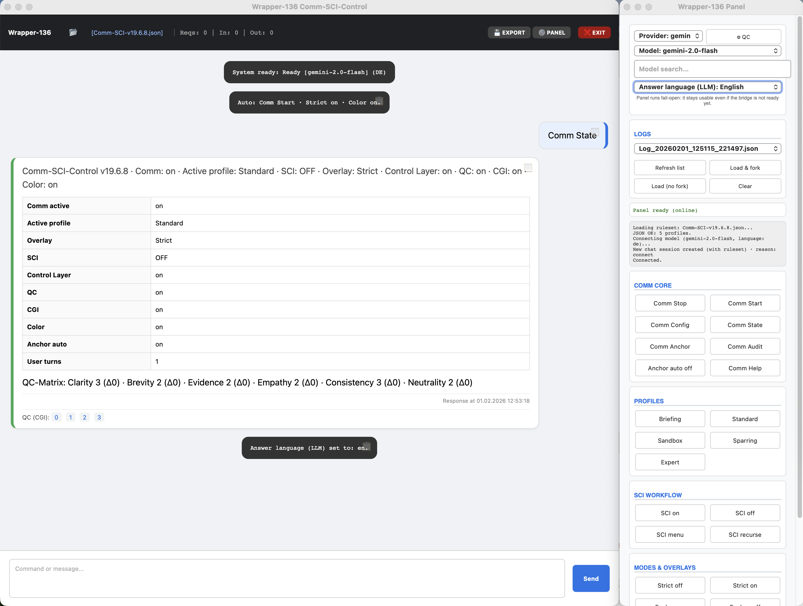
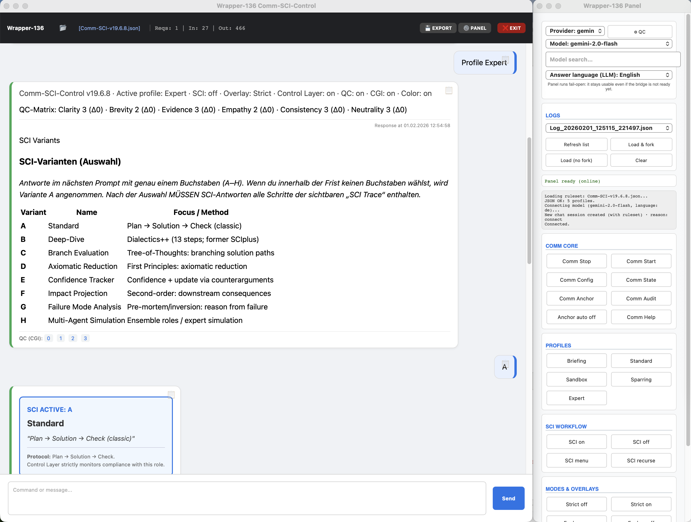
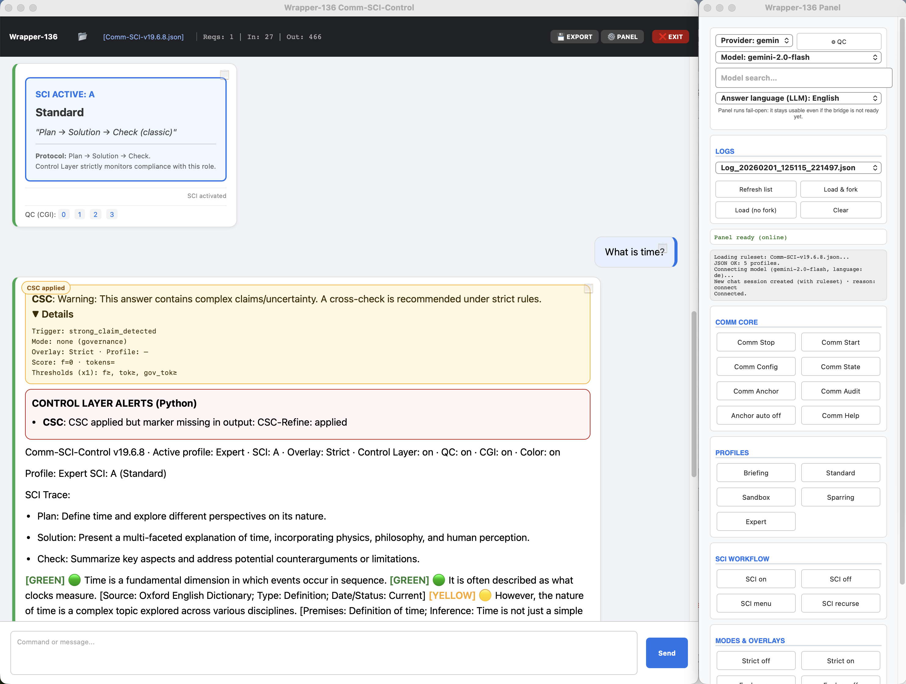
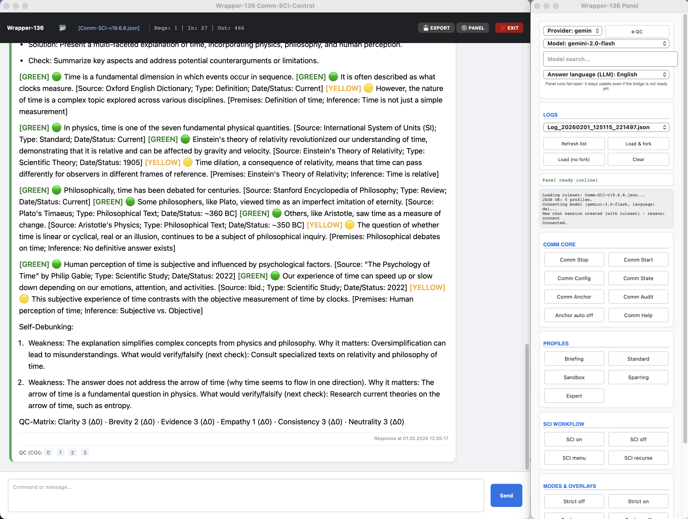
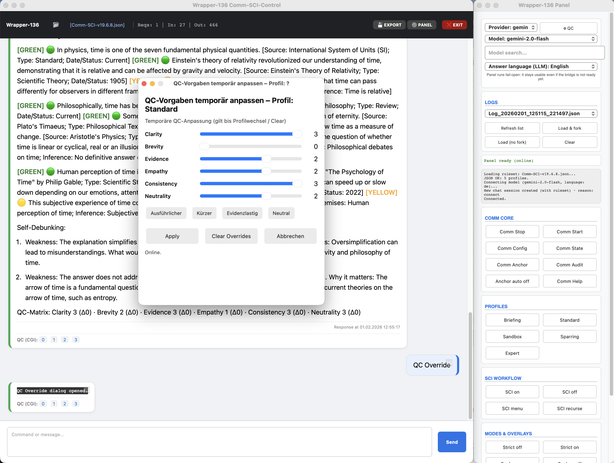
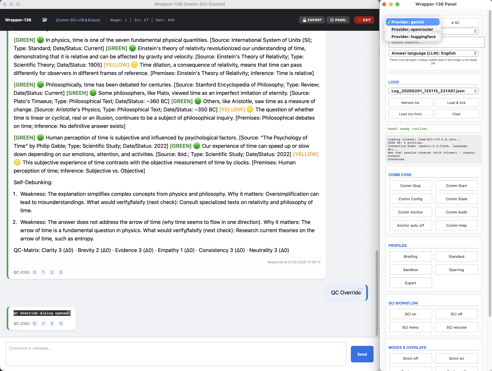

6
Comm-SCI-Control Private Laufzeit
Deterministische Governance-Ausfuehrung fuer produktive Wrapper. Kommandos, Contracts und Qualitaetsgates bleiben explizit und auditierbar.
Diese private Projektlinie fokussiert den robusten Wrapper-Betrieb fuer Comm-SCI: striktes Command-Routing, SCI-State-Handling, QC- und Verification-Durchsetzung, panelgestuetzte Bedienung und zweisprachige Projektdokumentation. Das System ist LLM-agnostisch: dieselben Governance-Regeln koennen gegenueber mehreren Providern und Modellen konsistent angewendet werden.
Warum diese Wrapper-Linie
Vom normativen JSON zur operativen Zuverlaessigkeit
Deterministischer Command-Flow
Standalone-only Parsing reduziert unbeabsichtigte State-Aenderungen und stabilisiert Automation.
Nachvollziehbare Qualitaetsdurchsetzung
SCI Trace, Self-Debunking, QC-Footer und Verification Gates werden per Runtime-Contract erzwungen und machen Evidenzgrenzen sichtbar.
Operative Sichtbarkeit
Comm State, Comm Anchor, Comm Audit und Panel-Diagnostik machen Drift und Modulstatus frueh sichtbar.
Eignung und Grenzen
Fuer wen der Wrapper gedacht ist und wofuer nicht
Geeignet
Fuer Nutzer, die Mensch-Maschine-Kommunikation strukturieren, reproduzierbarer machen und Evidenzqualitaet von LLM-Antworten explizit einschaetzen wollen.
Nicht der Zweck
Kein Prompt-Beautifier und kein "magisches Promptsystem". Fokus ist Governance, Nachvollziehbarkeit und kontrollierte Qualitaetssicherung statt reiner Stiloptimierung.
LLM-agnostischer Kern
Die Regel- und Bewertungslogik bleibt bei Providerwechsel erhalten. Das erleichtert faire Modellvergleiche, Regressionstests und reproduzierbare Workflows.
Kontrollorientierter Einstieg
Eigene Seiten fuer Motivation, Runtime-Szenarien und Grenzen
Die Startseite behaelt Architektur und Installation sichtbar. Zusaetzliche Seiten liefern didaktische Einstiege: warum der Wrapper existiert, wann Runtime sich lohnt und wo harte Grenzen liegen.
Anwendungsfelder
Moegliche Einsatzszenarien
Schule und Studium
Didaktisch klare Antworten, strukturierte Argumentation und reflektierte Unsicherheitskommunikation.
Wissenschaft und Forschung
Vergleichbare Prompt-Runs, nachvollziehbare Evidenzkennzeichnung, Auditierbarkeit und Versionsbezug.
Regulierte Kontexte
Fuer Aerzte, Juristen und andere kritische Fachrollen als Struktur- und Pruefhilfe, nicht als Ersatz professioneller Verantwortung.
Kritisches Denken
Self-Debunking und Verification Gates helfen, scheinbar plausible Antworten aktiv zu hinterfragen.
Execution-Modell
Wrapper-Pipeline in fixer Reihenfolge
-
P0 Parse
Input wird als Standalone-Command, SCI-Auswahl oder Inhaltsanfrage klassifiziert.
-
P1 Route
Deterministische Auswahl zwischen Command-Dispatch und governter Content-Route.
-
P2 State
Runtime-State wird aktualisiert (Profil, SCI, Overlay, Language Policy, QC-Overrides).
-
P2B Preflight
Contract-Guards und Compliance-Voraussetzungen werden vor der Inhaltsausgabe geprueft.
-
P3-P4 Contract + Repair
Verstoesse fuehren zu deterministischer Korrektur oder explizitem Control-Layer-Block.
-
P5 Render + Audit
Strukturiertes HTML, Zeitstempel und Audit-Records sichern Reproduzierbarkeit.
Operative Module
Vier Schutzflaechen der Governance
Control Layer
Erzwingt Command-Contracts, Output-Reihenfolge und deterministisches Fallback-Verhalten.
QC und Overrides
Normalisiert QC-Zielwerte und haelt Overrides in State und Ausgabe explizit sichtbar.
SCI-Orchestrierung
Steuert Pending-Auswahl, Trace-Step-Pflichten und das Recurse-Verhalten.
CGI-Feedback-Loop
Verarbeitet strukturiertes Nutzerfeedback ohne verdeckte oder implizite State-Spruenge.
Didaktische Begriffsklaerung
Alle zentralen Fachbegriffe auf einer Extraseite
Glossar (DE)
SCI-Orchestrierung, Pending-Auswahl, Runtime-Contract, Drift, CSC, QC-Footer, Verification Gates und weitere Begriffe mit einfachen Erklaerungen.
Glossar (EN)
English counterpart with aligned terminology and governance context.
SCI A-H mit Beispielen
Jede Variante wird mit typischen Aufgabenarten und Einsatzempfehlungen erklaert.
Orientierung
Seitenbaum fuer schnelle Navigation
Kernseiten
Installation und Betrieb
Begriffe und Struktur
Installation auf der Webseite
Direkter Einstieg + getrennte Detailseiten fuer Laien und Profis
Schnellstart auf der Hauptseite
Grundlegende Setup-Schritte bleiben direkt sichtbar, damit neue Nutzer ohne Umweg starten koennen.
Detailseite fuer Einsteiger
Mit Link, Download, Entpacken, Voraussetzungen, Installation, Start, API-Key-Dialog (Klartext/Verschluesselung), Passphrase-Hinweisen, Geheimhaltung und Kostenhinweisen.
Detailseite fuer Profis
Mit reproduzierbarem Setup, Test-/Diagnosepfaden, Provider-Validierung sowie klaren Richtlinien fuer verschluesselte und unverschluesselte API-Keys.
| Schnellstart auf der Hauptseite | Kommando |
|---|---|
| Setup | bash scripts/setup_venv.sh |
| Venv aktivieren | source .venc/bin/activate |
| Start | python Comm-SCI-Control-App.py |
UI-Eindruecke
Panel- und Wrapper-Screenshots






Projektdokumentation
Zweisprachige Dokumente fuer Betrieb und Architektur
Handbuch (DE)
Betriebsmodell, Command-Disziplin, Language Policy und Governance-Playbook.
Handbook (EN)
Englische Referenz fuer Architektur, Ablauflogik und Reproduzierbarkeit.
README (DE)
Schneller Einstieg, Testkommandos, Repository-Map und DOI-Strategie.
README (EN)
English onboarding and operational command references.
Proposal-Backlog
Professionelle Ablage fuer Erweiterungsideen vor der eigentlichen Umsetzung.
Installations-/Sync-Runbook
Betriebsnahe Setup-Routine und sicherer lokaler Transfer in den Wrapper-Klon.
Installationsseite Laien
Didaktisch gefuehrte Installation fuer nicht technische Nutzer.
Installationsseite Profis
Erweiterte Betriebs- und Testschritte fuer technische Nutzer.
Fachbegriffe-Glossar
Zentrale Wrapper-Begriffe mit Bedeutung und Praxisbezug.
Warum Wrapper
Zweck, Design-Rationale und kontrollorientierte Positionierung.
Laufzeit-Szenarien
Wann JSON-only reicht und wann Runtime-Ausfuehrung vorzuziehen ist.
Wrapper-Grenzen
Operative Trade-offs und explizite Nicht-Garantien.
Manual-Test-Checkliste
Release-nahe manuelle Pruefungen und Panel-Regressionsroutine.
Zitations-Baseline
DOI-Mapping fuer Wrapper und Regelwerk
| Ressource | DOI / Link | Einsatz |
|---|---|---|
| Wrapper Concept DOI | 10.5281/zenodo.18445672 | Stabiler Verweis ueber alle Wrapper-Versionen. |
| Regelwerk Concept DOI | 10.5281/zenodo.17928357 | Normative Governance-Quelle ueber alle Releases. |